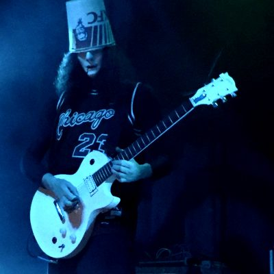

Buckethead
Un exhuberante músico de fama internacional; guitarrista y bajista increíblemente dotado, ha demostrado la velocidad de Paul Gilbert y una precisión se ha filtrado en unos tonos muy armónicos y sensibles. Sus movimientos y dominio estaban por sobre los clichés del metal y el rock, es difícil creerlo pero tiene talento.
Por Matias Velazquez

¿Quién es?
Reconocido por su nombre artístico "Buckethead", pero en realidad éste personaje se llama Brian Patrick Carroll, un virtuoso guitarrista, filántropo y compositor estadounidense, nacido en Huntingtong Beach, California un 13 de Mayo de 1969. Es uno de cinco hermanos, en su juventud fue un niño tímido y pasaba la mayor parte de su tiempo un gallinero que yacía en su casa, esto se debe a que sus padres las críaban. Comenzó con éste deslumbrante proyecto a los 12 años, tuvo profesores muy destacados en el mundo de la música como Paul Gilbert, Johnny Fortune, Max McGuire y Pebber Brown.
Caracterización
Es conocido por su espeluznante apariencia, la cual consiste en una máscara blanca inexpresiva( basada en la que uso Michael Mayers en Hallowen IV) y una cubeta de Kentuchy Fried Chicken( mejor conocido como KFC) con la un sticker que se lee "funeral". Ésto existió puesto que Carroll, en una noche de Hallowen no sabía de qué disfrazarse, estaba indeciso, hasta que vió el bote de KFC, lo colocó en su cabeza, a continuación se insertó una careta bastante llamativa, él dice haberse contemplado un largo tiempo frente al espejo, luego de tal momento, grito para sí mismo, "I'm Buckethead", que significa Yo soy Buckethead.
Después empezó a salir más a la luz puesto que fue incluido en las listas de la revista Guitar World de "Los 25 guitarristas más extraños de todos los tiempos" y "Los 50 guitarristas más rápidos de todos los tiempos". GuitarOne votó por él como el número 8 de "Los 10 mejores guitarristas shredders de todos los tiempos". ha lanzado más de 300 albumes y colaborado en más de 50, también sus extendidos.
Las apariencias engañan
Matias Velazquez
Las apariencias engañan
Matias Velazquez
Estilos musicales
Thrash metal, speed metal, funk metal, avant-garde, metal vanguardista, metal alternativo, metal progresivo, jazz, jazz fusión, música electrónica, rock electrónico, funk rock, hard rock, rock experimental, rock progresivo, rock alternativo, rock instrumental, blues, blues rock, música acústica, ambient, dark ambient y hasta la música minimalista.
Actualidad
Se encuentra en un grave estado debido a la vida insana que solía llevar, ésto lo ha dejado fuera de los escenarios por un tiempo y hasta el día de hoy no se ha confirmado su regreso ni nada por el estilo, pero es un artista con mucho para dar y un exponente mundial de la guitarra eléctrica.